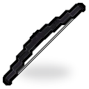

A Name in Town
A Name in Town is a quest line given by Maeve. Maeve rewards you as you level up.
How it opens
- Open from the start.
Steps
| # | Quest | Level | Objective | Rewards |
|---|---|---|---|---|
| 1 | Suit Up | 2 | Wear three pieces of gear at once. |  Leather Cap Leather Cap |
| 2 | Finding Your Feet | 5 | Reach level 5. |  Leather Tunic Leather Tunic |
| 3 | Seasoned | 10 | Reach level 10. |  Mithril Ingot ×5 Mithril Ingot ×5 Maple Plank ×5 Maple Plank ×5 Cotton Fabric ×5 Cotton Fabric ×5 |
| 4 | Veteran | 20 | Reach level 20. |  Rugged Hide ×4 Rugged Hide ×4 Horn Chunks ×2 Horn Chunks ×2 Gold Coin ×500 Gold Coin ×500 |
| 5 | Hero of Greenshore | 30 | Reach level 30. |  Adamantite Armor Adamantite Armor |
| 6 | Legend | 40 | Reach level 40. |  Spiky Bow Spiky Bow |
| 7 | Known Abroad | 45 | Reach level 45. |  Orichalcum Ingot ×4 Orichalcum Ingot ×4 Darkwood Plank ×4 Darkwood Plank ×4 Lotus Cloth ×4 Lotus Cloth ×4 |
| 8 | Fifty | 50 | Reach level 50. |  Lotus Hat Lotus Hat |
| 9 | Old Hand | 55 | Reach level 55. |  Darkwood Bow |
| 10 | Living Legend | 60 | Reach level 60. |  Orichalcum Buckler Orichalcum Buckler |